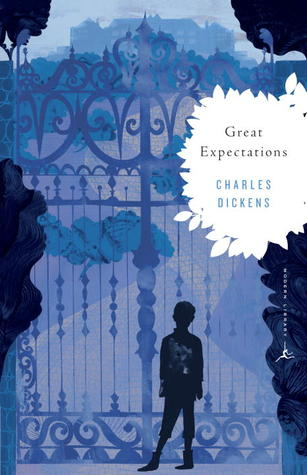
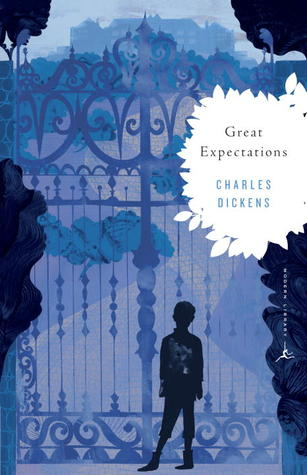

I love reading classics, which have brought me not only joy but also the reading comprehension skills that enabled me to succeed academically.
Here are some of my favorite books and my reviews for them:
- nourishments for my curiosity
For me, learning is the purpose of my life, and it is the source of my upmost happiness. It grants me the freedom to change, and it enables me the potential to grow. No matter how many mistakes I make, no matter how deep I fall - as long as I can learn, I am omnipotent.
I love reading classics, which have brought me not only joy but also the reading comprehension skills that enabled me to succeed academically.
Here are some of my favorite books and my reviews for them:


 

A brilliant novel. The short and fragmented sentences, like the short and powerful strokes of an impressionist painting, cloaked this novel with a tranquil, almost stream-of-consciousness quality, which made the characters and the story feel especially real and alive. Under the fluid narrative swelled the rich warmth of family, and a profound message of art and religion rose from this simple yet moving story.
Five stars to this timeless tragedy of external against internal forms of beauty and selfish
against
selfless acts of love, with an intense romance no less powerful or destructive than that in
Wuthering
Heights, and characters no less monstrous yet humane than those in Frankenstein.
Although I was bored by some historical and slow-paced chapters, and the archetypes are
glaringly
extreme in this novel, Victor Hugo successfully kept me on the edge of the chair through this
exhilarating
emotional ride, and the dramatic irony held me in so firm a grasp unrivaled by even Shakespeare.
The descriptions are so skillfully written that I can still recall scenes in this book as images
in my head, like that of a movie; but unlike a movie, the words are infinitely more powerful and
the imagination that they inspire are infinitely more unforgettable.
I may not comprehend the subtlety of Dickens' diction, I may not appreciate the beauty of Mary
Shelly's
prose, and I may not enjoy the greatness that Jane Austin's simple story encapsulates; but I was
completely blown away by the hauntingly beautiful writing of this touching story.
It is about the courage of the blind girl against the evil of the war that tears her family
asunder,
and it is about the innocence of the orphan boy against the cruelty of reality that extinguishes
the spark of his curiosity; it is something excruciatingly beautiful, and it is something
stunningly
heartbreaking; and it is a story that digs up all the light we cannot see under the atrocities
of
the war and the indifference of history.
I’ve only finished this book yesterday. Oh, how happy and sad I was! How could I not be infected by the celestial happiness of the blissful ending, and how could I not be sad to finally separate with those so dear and unique companions! Tears of happiness swelled in my eyes when I traversed between the lines of Agnes and David’s confession, and how empty I felt, when I had to reluctantly let go of this world, as the last paragraph came to a quiet and serene end! No more need I praise the witty prose and masterful storytelling of my favorite author, and no more need I exclaim the realness of the characters and the details of the world; for I don’t wish to complacently comment on this great novel, nor associate my vain and childish words with one of the most venerated author and greatest work in the history - I just want to throw my entirety into this world, and never, ever leave.
I love the enthralling story and Hugo's acute yet poetic autopsy of the society, but I have to admit that I have neither the patience nor the passion to appreciate the history sections in this book, and I actually skipped a few of them. Nonetheless it was very hard to finally put down this tome, with love and humanity so overwhelming and poverty and degradation so heartbreaking and all aspects of the society, from the basest street urchin to the noblest philanthropist, treated with love and care so sincere and touching that a sense of progress and belief in humanity arises even from the most miserable of the society and the bloodiest of the revolution.
Bravo… Dickens mercilessly tore apart the hypocrisy of the Poor Law and the Puritan Church by his witty sarcasm, and his fastidious portrayal of the sordid and immoral society during the Industrial Revolution showed the degradation of humanity that is appalling to even imagine. The story, although filled with clearly identifiable Victorian archetypes, was very intriguing and memorable; and when Nancy was brutally murdered, I wanted to cry, but being tired, I was only left with an ineffable anguish and a gratification for being able to live in our contemporary world.
Never have I met characters so lively and memorable, as those sculpted by Dickens in this novel.
When I was first introduced to the ghastly house occupied by the eccentric Miss Havisham, for a
second
I thought I was in a science fiction novel; but I couldn't be more wrong, as the characters
developed
so completely and the story was concluded so beautifully, that it completely surpassed my
already
great expectations for this book.
Thank you, Dickens, for again reminding me of the power that a novel can truly possess.
Although I have only developed an affinity for programming in my junior year, I have avidly perused many programming books and taught myself to build websites like this one.
At the moment, I’m learning frontend development and practicing solving problems using Java.

Completed 55 challenges on HackerRank.

Read 3 books in the series You Don't Know JavaScript.

Completed HTML and Introduction to JavaScript courses on codecademy.
After moving to America from China 4 years ago, I have not only worked hard to become fluent in English, but I also started my journey of mastering Spanish.
A language is a pathway to a culture, a vessel that can carry me to other parts of this diverse world. By adding another language into my lexicon, I can open up a world of opportunities for my future.
In addition to what I learned in class, I have learned many mathematical subjects by myself to improve my problem-solving abilities. I am simply not satisfied with a superficial understanding of a concept, and this curiosity has driven me to excel in classes like physics.

Read the Art of Problem Solving Volume 1 twice.
(1072 pages)